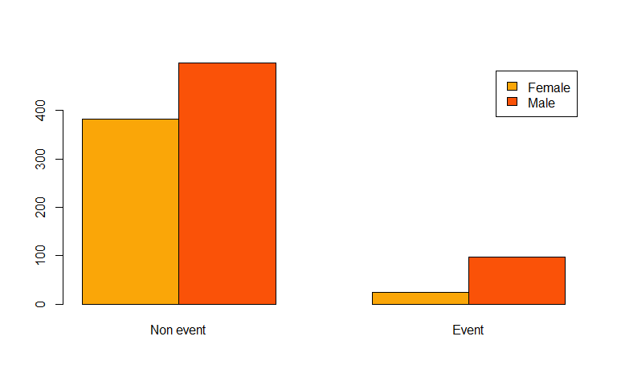
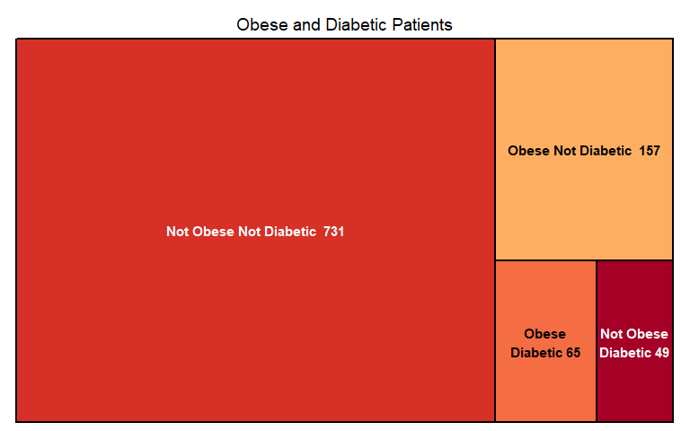
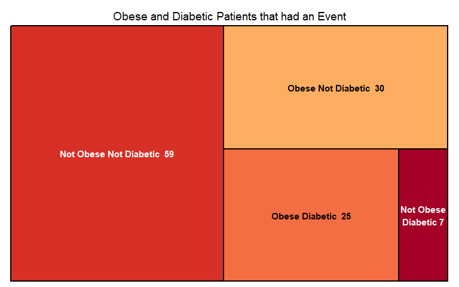
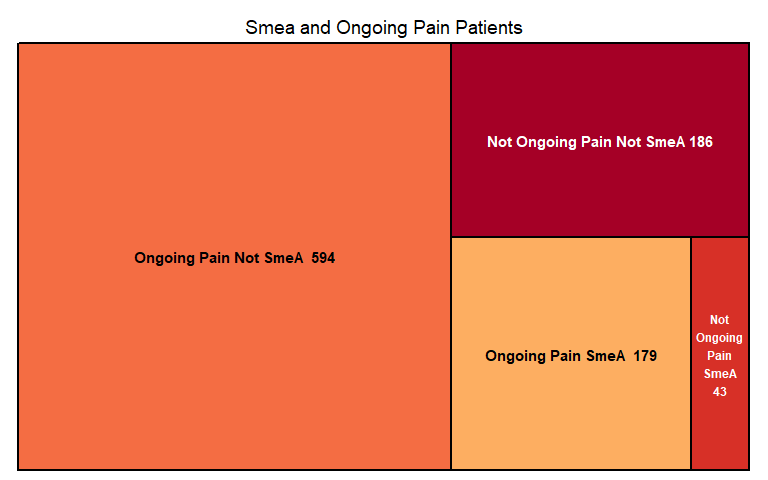
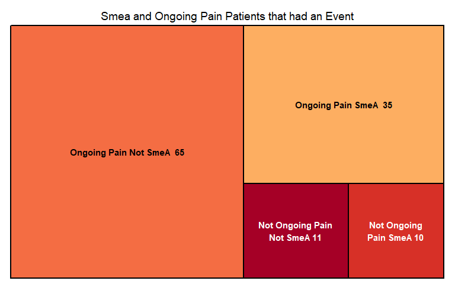
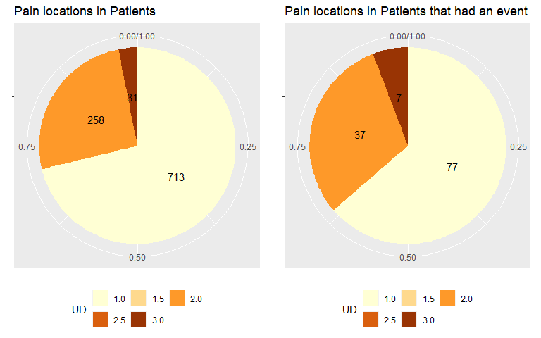

Data analysis for Cardiovascular Event Predictor
Introduction
The data collected to make this graphs was taken from an already curated data set in which there are 1002 patients, from whom:
407 are female
595 are male
Female mean age 47
Male mean age 50
121 suffered a cardiovascular event
This data obtained is representative for this sample but may not apply for all the population.
Interesting data values:
Mean age of patients who suffered an event
62.41 years
With ongoing pain who had symptoms, older than 62 and suffered an event
37.04 %
Patients according to gender

Patients that suffered an event according to risk factors
Taking into account that patients may suffer from more than one risk factor.
Analysis
Obesity and diabetes

Percentages of patients that suffered an event:
| Not Obese and Not Diabetic | Obese and Diabetic | Not Obese and Diabetic | Obese and Not Diabetic |
|---|---|---|---|
| 8% | 38% | 14% | 19% |
From this graph we can retrieve that patients that suffer either obesity or diabetes are high risk patients but when those two factors are combined there is almost 38% chance of suffering a cardiac event, while only being a 19% with obesity and 14% with diabetic patients.
Ongoing pain and Anginal Syndrome

Percentages of patients that suffered an event:
| Not Ongoing Pain and Not SmeA | Ongoing Pain and SmeA | Not Ongoing Pain and SmeA | Ongoing Pain and Not SmeA |
|---|---|---|---|
| 6% | 20% | 23% | 11% |
This graph shows how SmeA and ongoing pain can be awarded as possible risk factor for cardiac events. As we can see from the graph and statistics, from the patients that had events, a 53% showed positive SmeA and 31% had on going pain.
Localized pain

Percentages of patients that suffered an event:
| Pain in one place | Pain in two places | Pain in three places |
|---|---|---|
| 11% | 14% | 22% |
The first pie chart shows in a cualitative way the pain locations in patients while the second pie chart shows the pain location in patients that had an event. Below the graphs, the percentages of patients that suffer an event have been shown in a table for cuantitative information.